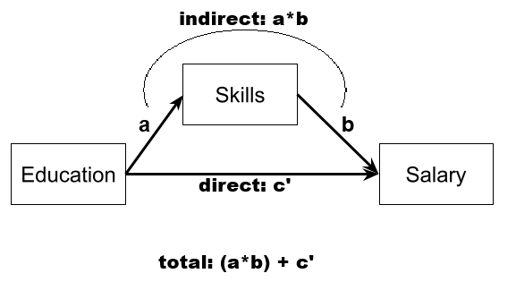
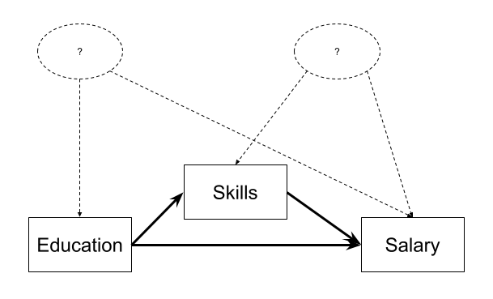

| variable | description |
|---|---|
| Educ | Number of years of education undertaken |
| Skill | Skillset metric (scores listed from a 100 item list of skills deemed relevant to employers) |
| Salary | Salary (in thousands of £) |
Week 9 Exercises: Path Analysis & Mediation
Education, Skills, and Salary
We sampled 500 people who were all 5 years out of their last year of education. All participants completed an extensive questionnaire to ascertain the number of skills of potential interest to employers each participant perceived themselves to have. This resulted in a “Skillset Metric”.
5 years later, participants were followed up and asked to provide their current salaries. 110 participants failed to respond to follow-ups and thus the final sample included 390 people.
The data are available at https://uoepsy.github.io/data/edskillsalary.csv.
Question 1
Read in the dataset.
Let’s suppose that the only statistical machinery available to us is the good old regression models with lm(), and we are interested in the estimated effect of education on salary.
Which model are you going to fit?
lm(Salary ~ Educ, data = ... )
lm(Salary ~ Skill + Educ, data = ... )
Question 2
Instead, let’s suppose we are actually interested in the mechanism of how education influences salary. Do more educated people tend to have higher salaries in part because of the skills obtained during their education?
Fit a path model in which education has an effect on salary both directly and indirectly, via its influence on the skills obtained (i.e., model B in Figure 1)
Hints
we have an outcome Y, a predictor X, and a mediator M:
mod <- "
Y ~ X + M
M ~ X
"
Question 3
While the model in the previous question better reflects our theoretical notions of how these variables are actually related, we would ideally get out an estimate of the indirect effect.
Edit your model formula from the previous question to also estimate both the total and the indirect effects.
Then re-fit the model, estimating the parameters using bootstrapping.
Is the association between education and salary mediated by skills? What proportion of the effect is mediated?
Hints
You’ll need to add some labels to the existing paths, and then define the indirect and total effects - see Chapter 7#mediation-in-lavaan.
Question 4
Nothing to code here, just spend a little time to get to grips with what the different parts of the model represent:
if you can, write down for explanation of each of:
- a
- b
- the total effect
- the direct effect
- the indirect effect

Question 5
In order for us to accurately estimate mediation effects, a few conditions have to be met. One of the biggest is that of no confounding.
An unmeasured variable that is a common cause of both X and Y will bias the total and direct effects, and one that is a common cause of both X and M will bias the indirect effect (it will bias the X\(\rightarrow\)M path). Randomised experiments (i.e. randomly allocating people to different values of X) will avoid this, because nothing but the random allocation would cause X. However, confounding of the indirect effect can also happen if some variable is a common cause of both M and Y, and it is hard to randomly allocate to a mediator1.
Can you think of two unmeasured variables that could be in the place of the variables indicated by ? in Figure 4 and may be confounding our estimates.

Question 6
Another assumption of our model here is that there is no “X-M interaction”. By this, I mean that we are assuming that the effect of the mediator M on the outcome Y does not depend on the level of the predictor X.
Think: what would an X-M interaction mean in this example?
More Conduct Problems
Dataset: cprobteach.csv
Thus far, we have explored the underlying structure of a scale of adolescent ‘conduct problems’ (PCA & EFA exercises) and we then tested this measurement model when the scale was administered to a further sample (CFA exericses).
This week, we are looking at whether there are associations between conduct problems (both aggressive and non-aggressive) and academic performance and whether the relations are mediated by the quality of relationships with teachers. We collected data on 557 adolescents as they entered school. Their responses to the conduct problem scale were summed to create a scale score. Two years later, we followed up these students, and obtained measures of Academic performance and of their relationship quality with their teachers. Standardised scale scores were created for both of these measures.
The data are available at https://uoepsy.github.io/data/conductprobteach.csv
| variable | description |
|---|---|
| ID | participant ID |
| Acad | Academic performance (average grade (0-100) based on all available assessments) |
| Teach_r | Teacher relationship quality (sum score based on the Teacher-Child-Relationship (TCR) scale - 7 items on a 5-point likert) |
| Non_agg | Non-Aggressive conduct problems (sum score based on items 1-5 of the 10 item conduct problems scale - 5 items on a 5-point likert) |
| Agg | Aggressive conduct problems (sum score based on items 6-10 of the 10 item conduct problems scale - 5 items on a 5-point likert) |
Question 7
As a little exercise before we get started, let’s just show ourselves that we can use lavaan to estimate all sorts of models, including a multiple regression model.
Let’s first just explore the total effects of the two types of conduct problems on academic achievement.
The code below fits the same model using sem() and using lm(). Examine the summary() output for both models, and spot the similarities.
# read in data
cp_teach<-read_csv("https://uoepsy.github.io/data/conductprobteach.csv")
# a straightforward multiple regression model
m1_lm <- lm(Acad ~ Non_agg + Agg, data = cp_teach)
# the same model fitted in lavaan
m1_lav <- 'Acad ~ Non_agg + Agg'
m1_lav.est <- sem(m1_lav, data = cp_teach)
Question 8
Make a sketch for a model in which both aggressive and non-aggressive conduct problems have indirect (via teacher relationships) and direct effects on academic performance.
Sketch the path diagram on a piece of paper, or use a website like https://semdiag.psychstat.org/ or https://www.diagrams.net/.
Question 9
Now specify the model in R, taking care to also define the parameters for the indirect and total effects.
Make sure to define the indirect effects and total effects. Then estimate the model by bootstrapping.
Hints
you’ll need more labels than just a, b, and c!
Question 10
Given that the measures we are using here all have fairly uninterpretable scales (i.e., what does being 1 higher on Agg really represent?), we might prefer standardised coefficients instead.
You can get these using standardizedSolution(model).
Question 11
Now visualise the estimated model and its parameters using the semPaths() function from the semPlot package.
Question 12
Write a brief paragraph reporting on the results of the model estimates. Include a Figure or Table to display the parameter estimates.
Footnotes
there are methods that attempt to “block” a mediator, or to manipulate X in multiple ways in order to increase or decrease the mediators’ effect. If you’re interested see Design approaches to experimental mediation, Pirlott & MacKinnon 2016↩︎
Note that the model fitted with
sem()provides \(Z\) values instead of the \(t\)-values in regression models. This is becausesem()fits models with maximum likelihood thereby assuming a reasonably large sample size.↩︎